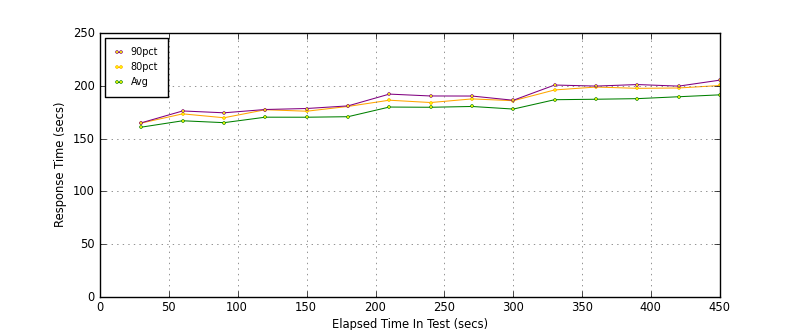
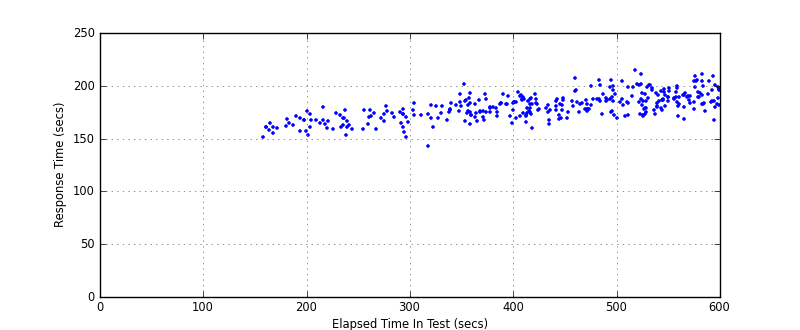
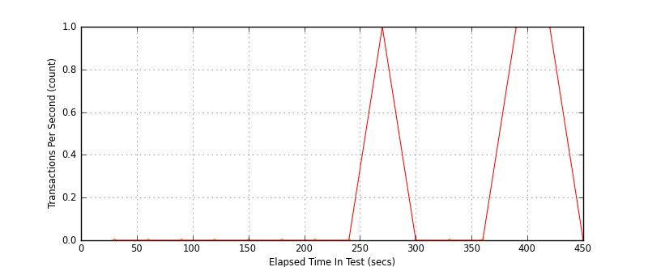
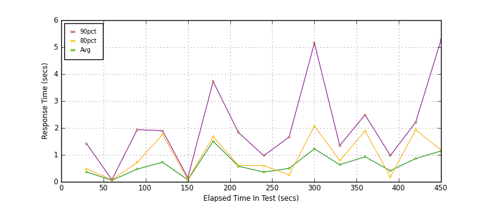
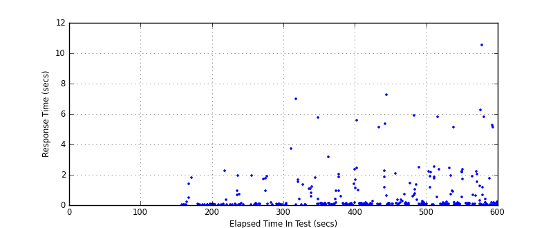
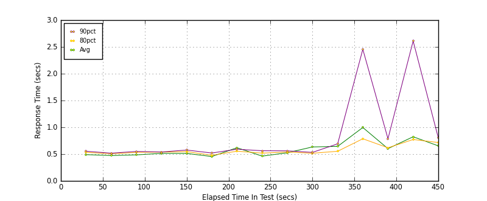
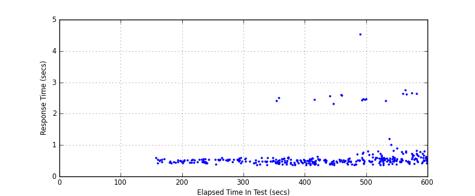
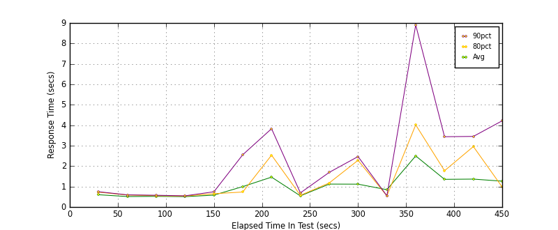
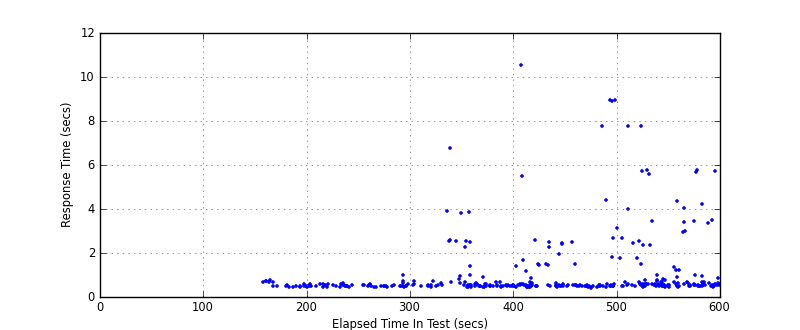

Performance Results Report
Summary
transactions: 647
errors: 1
run time: 600 secs
rampup: 600 secs
test start: 2012-03-01 16:48:25
test finish: 2012-03-01 16:55:47
time-series interval: 30 secs
workload configuration:
| group name | threads | script name |
|---|
| user_group-1 | 100 | mech_chat.py |
| user_group-2 | 100 | mech_chat.py |
| user_group-3 | 100 | mech_chat.py |
All Transactions
Transaction Response Summary (secs)
| count | min | avg | 80pct | 90pct | 95pct | max | stdev |
|---|
| 647 | 143.221 | 180.718 | 190.543 | 197.600 | 201.193 | 214.725 | 12.262 |
Interval Details (secs)
| interval | count | rate | min | avg | 80pct | 90pct | 95pct | max | stdev |
|---|
| 1 | 12 | 0.40 | 151.624 | 160.837 | 164.733 | 164.957 | 168.914 | 168.914 | 4.529 |
| 2 | 15 | 0.50 | 153.320 | 166.878 | 173.432 | 176.182 | 179.726 | 179.726 | 7.179 |
| 3 | 16 | 0.53 | 153.708 | 165.091 | 169.744 | 174.432 | 177.258 | 177.258 | 6.312 |
| 4 | 12 | 0.40 | 158.769 | 170.280 | 177.338 | 177.555 | 180.986 | 180.986 | 7.196 |
| 5 | 16 | 0.53 | 151.831 | 170.241 | 175.933 | 178.498 | 183.563 | 183.563 | 8.357 |
| 6 | 12 | 0.40 | 143.221 | 170.738 | 180.460 | 180.976 | 181.569 | 181.569 | 10.519 |
| 7 | 27 | 0.90 | 164.192 | 179.880 | 186.356 | 192.140 | 192.772 | 201.478 | 8.708 |
| 8 | 23 | 0.77 | 167.567 | 179.667 | 184.151 | 190.363 | 191.918 | 192.362 | 6.785 |
| 9 | 37 | 1.23 | 159.973 | 180.430 | 187.587 | 190.307 | 192.088 | 194.541 | 8.335 |
| 10 | 22 | 0.73 | 163.614 | 177.969 | 185.892 | 186.307 | 187.783 | 188.485 | 7.098 |
| 11 | 24 | 0.80 | 173.155 | 186.830 | 196.086 | 200.739 | 205.034 | 207.329 | 9.573 |
| 12 | 26 | 0.87 | 169.522 | 187.272 | 198.815 | 199.727 | 204.651 | 205.661 | 10.289 |
| 13 | 44 | 1.47 | 171.276 | 187.836 | 197.600 | 201.193 | 201.795 | 214.725 | 10.579 |
| 14 | 32 | 1.07 | 168.802 | 189.637 | 197.933 | 199.692 | 204.422 | 209.092 | 8.834 |
| 15 | 29 | 0.97 | 167.471 | 191.449 | 200.288 | 205.375 | 209.076 | 211.513 | 10.340 |
Graphs
Response Time: 30 sec time-series

Response Time: raw data (all points)

Throughput: 5 sec time-series

Custom Timer: Chat
Timer Summary (secs)
| count | min | avg | 80pct | 90pct | 95pct | max | stdev |
|---|
| 347 | 0.034 | 0.658 | 0.971 | 1.939 | 2.488 | 10.565 | 1.342 |
Interval Details (secs)
| interval | count | rate | min | avg | 80pct | 90pct | 95pct | max | stdev |
|---|
| 1 | 12 | 0.40 | 0.040 | 0.365 | 0.482 | 1.417 | 1.828 | 1.828 | 0.607 |
| 2 | 15 | 0.50 | 0.039 | 0.058 | 0.074 | 0.077 | 0.110 | 0.110 | 0.019 |
| 3 | 16 | 0.53 | 0.040 | 0.470 | 0.716 | 1.939 | 2.262 | 2.262 | 0.700 |
| 4 | 12 | 0.40 | 0.034 | 0.730 | 1.753 | 1.897 | 1.934 | 1.934 | 0.852 |
| 5 | 16 | 0.53 | 0.035 | 0.073 | 0.087 | 0.153 | 0.178 | 0.178 | 0.042 |
| 6 | 12 | 0.40 | 0.043 | 1.505 | 1.680 | 3.722 | 6.987 | 6.987 | 2.024 |
| 7 | 27 | 0.90 | 0.041 | 0.579 | 0.608 | 1.831 | 3.199 | 5.793 | 1.256 |
| 8 | 23 | 0.77 | 0.039 | 0.360 | 0.599 | 0.971 | 1.859 | 2.025 | 0.568 |
| 9 | 37 | 1.23 | 0.039 | 0.497 | 0.256 | 1.662 | 2.462 | 5.583 | 1.069 |
| 10 | 22 | 0.73 | 0.035 | 1.223 | 2.076 | 5.154 | 5.346 | 7.286 | 2.072 |
| 11 | 24 | 0.80 | 0.041 | 0.634 | 0.787 | 1.349 | 1.441 | 5.918 | 1.199 |
| 12 | 26 | 0.87 | 0.047 | 0.929 | 1.887 | 2.488 | 2.551 | 5.808 | 1.357 |
| 13 | 44 | 1.47 | 0.037 | 0.410 | 0.190 | 0.972 | 2.353 | 5.129 | 0.929 |
| 14 | 32 | 1.07 | 0.051 | 0.863 | 1.923 | 2.215 | 2.364 | 6.267 | 1.295 |
| 15 | 29 | 0.97 | 0.045 | 1.145 | 1.184 | 5.265 | 5.817 | 10.565 | 2.444 |
Graphs
Response Time: 30 sec time-series

Response Time: raw data (all points)

Throughput: 30 sec time-series

Custom Timer: Payment
Timer Summary (secs)
| count | min | avg | 80pct | 90pct | 95pct | max | stdev |
|---|
| 347 | 0.351 | 0.618 | 0.580 | 0.715 | 2.317 | 4.531 | 0.495 |
Interval Details (secs)
| interval | count | rate | min | avg | 80pct | 90pct | 95pct | max | stdev |
|---|
| 1 | 12 | 0.40 | 0.423 | 0.490 | 0.532 | 0.554 | 0.596 | 0.596 | 0.054 |
| 2 | 15 | 0.50 | 0.417 | 0.473 | 0.507 | 0.517 | 0.519 | 0.519 | 0.033 |
| 3 | 16 | 0.53 | 0.413 | 0.486 | 0.531 | 0.550 | 0.554 | 0.554 | 0.049 |
| 4 | 12 | 0.40 | 0.374 | 0.514 | 0.537 | 0.540 | 0.583 | 0.583 | 0.050 |
| 5 | 16 | 0.53 | 0.423 | 0.512 | 0.546 | 0.576 | 0.585 | 0.585 | 0.045 |
| 6 | 12 | 0.40 | 0.365 | 0.455 | 0.478 | 0.520 | 0.591 | 0.591 | 0.062 |
| 7 | 27 | 0.90 | 0.352 | 0.619 | 0.554 | 0.591 | 2.404 | 2.498 | 0.532 |
| 8 | 23 | 0.77 | 0.351 | 0.462 | 0.518 | 0.562 | 0.578 | 0.603 | 0.070 |
| 9 | 37 | 1.23 | 0.352 | 0.525 | 0.539 | 0.560 | 0.628 | 2.444 | 0.331 |
| 10 | 22 | 0.73 | 0.365 | 0.634 | 0.516 | 0.532 | 2.317 | 2.556 | 0.587 |
| 11 | 24 | 0.80 | 0.357 | 0.644 | 0.553 | 0.692 | 2.583 | 2.586 | 0.602 |
| 12 | 26 | 0.87 | 0.372 | 0.996 | 0.786 | 2.456 | 2.463 | 4.531 | 1.008 |
| 13 | 44 | 1.47 | 0.359 | 0.602 | 0.618 | 0.786 | 0.997 | 2.401 | 0.317 |
| 14 | 32 | 1.07 | 0.374 | 0.824 | 0.772 | 2.610 | 2.647 | 2.755 | 0.716 |
| 15 | 29 | 0.97 | 0.400 | 0.654 | 0.716 | 0.802 | 0.813 | 2.632 | 0.397 |
Graphs
Response Time: 30 sec time-series

Response Time: raw data (all points)

Throughput: 30 sec time-series
Custom Timer: Signup
Timer Summary (secs)
| count | min | avg | 80pct | 90pct | 95pct | max | stdev |
|---|
| 347 | 0.425 | 1.135 | 0.978 | 2.582 | 4.216 | 10.557 | 1.540 |
Interval Details (secs)
| interval | count | rate | min | avg | 80pct | 90pct | 95pct | max | stdev |
|---|
| 1 | 12 | 0.40 | 0.460 | 0.600 | 0.725 | 0.747 | 0.765 | 0.765 | 0.122 |
| 2 | 15 | 0.50 | 0.453 | 0.512 | 0.585 | 0.594 | 0.604 | 0.604 | 0.050 |
| 3 | 16 | 0.53 | 0.454 | 0.521 | 0.553 | 0.574 | 0.619 | 0.619 | 0.046 |
| 4 | 12 | 0.40 | 0.458 | 0.508 | 0.538 | 0.547 | 0.580 | 0.580 | 0.036 |
| 5 | 16 | 0.53 | 0.465 | 0.580 | 0.649 | 0.745 | 0.978 | 0.978 | 0.135 |
| 6 | 12 | 0.40 | 0.454 | 0.998 | 0.733 | 2.555 | 3.910 | 3.910 | 1.086 |
| 7 | 27 | 0.90 | 0.448 | 1.462 | 2.536 | 3.830 | 3.870 | 6.783 | 1.500 |
| 8 | 23 | 0.77 | 0.439 | 0.544 | 0.572 | 0.690 | 0.691 | 0.914 | 0.103 |
| 9 | 37 | 1.23 | 0.453 | 1.121 | 1.176 | 1.693 | 5.521 | 10.557 | 1.835 |
| 10 | 22 | 0.73 | 0.467 | 1.118 | 2.285 | 2.467 | 2.511 | 2.519 | 0.828 |
| 11 | 24 | 0.80 | 0.425 | 0.847 | 0.545 | 0.549 | 1.510 | 7.780 | 1.491 |
| 12 | 26 | 0.87 | 0.453 | 2.499 | 4.018 | 8.905 | 8.941 | 8.947 | 2.924 |
| 13 | 44 | 1.47 | 0.467 | 1.353 | 1.774 | 3.438 | 5.742 | 7.771 | 1.706 |
| 14 | 32 | 1.07 | 0.459 | 1.365 | 2.956 | 3.453 | 4.356 | 5.688 | 1.418 |
| 15 | 29 | 0.97 | 0.472 | 1.264 | 0.977 | 4.216 | 5.717 | 5.784 | 1.578 |
Graphs
Response Time: 30 sec time-series

Response Time: raw data (all points)

Throughput: 30 sec time-series